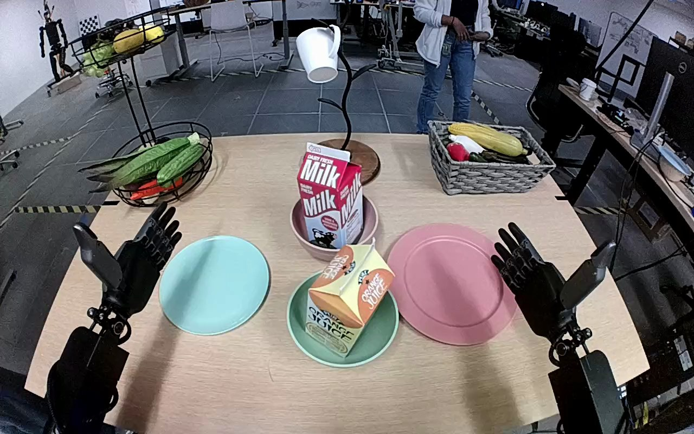

NVIDIA GR1 · 17
Video 17

Visual review action_review.json
{
"prompt_protocol": "humanoid_action_v1",
"prompt_provenance": "visually_authored_from_video_and_initial_frame",
"reviewed_contact_sheets": [
"sheet_001.jpg"
],
"inspected_frame_stride": 2,
"inspected_sampled_frame_count": 60,
"initial_scene": "Robot-aligned view over two forward-reaching arms and a tabletop. A red-and-white milk carton stands inside a small pink bowl near the center; an empty light blue plate is to its left. A separate orange-juice carton and large pink plate are not manipulated.",
"observed_sequence": [
{
"start_frame": 0,
"end_frame": 42,
"action": "The left forearm reaches from its own side toward the milk carton while the right hand remains open at the right edge of the table.",
"confidence": "high"
},
{
"start_frame": 43,
"end_frame": 66,
"action": "The left hand contacts the milk carton and closes its thumb and fingers around the sides while the carton initially remains in the pink bowl.",
"confidence": "high"
},
{
"start_frame": 67,
"end_frame": 80,
"action": "The left hand lifts the carton clear of the bowl and carries it leftward toward the blue plate; the now-empty pink bowl becomes visible.",
"confidence": "high"
},
{
"start_frame": 81,
"end_frame": 109,
"action": "The left hand positions the carton over the blue plate and lowers its base onto the plate while retaining the grip.",
"confidence": "high"
},
{
"start_frame": 110,
"end_frame": 119,
"action": "The left thumb and fingers open away from the carton and the hand withdraws slightly. The milk carton remains standing upright on the blue plate.",
"confidence": "high"
}
],
"arm_hand_roles": {
"left": "Sole active manipulation hand: grasps, lifts, transports, lowers and releases the milk carton.",
"right": "Open and idle near the lower-right tabletop throughout; no object contact or support.",
"coordination": "No bimanual manipulation or transfer; the person beyond the table does not interact with the carton."
},
"anatomical_side_evidence": {
"description": "This is a robot-aligned forward/downward view: both arm chains extend away from the lower corners toward the tabletop, with thumbs facing inward in the initial open-hand pose. The active arm is connected along the robot-left chain at lower left and reaches inward without swapping or crossing arm identities. Robot-relative left therefore coincides with image left for this view, rather than applying a front-facing-camera reversal.",
"confidence": "high",
"limitations": "Shoulder/torso attachment is outside the view; assignment uses visible arm-chain orientation and inward-facing thumbs."
},
"terminal_state": "Milk carton stands upright on the light blue plate, removed from the empty pink bowl. The left hand is visibly open and withdrawn clear; the right hand remains idle and open.",
"uncertainties": [
"Exact hidden finger contacts behind the carton are occluded during the grasp; release is visible at the ending. Shoulder attachment is out of frame, so anatomical naming is grounded in the robot-aligned view and arm/hand orientation."
],
"annotation_discrepancies": [
"The source calls the object a milk bottle; its visible rectangular body and folded top identify it as a milk carton."
],
"evidence_frame_indices": [
0,
46,
64,
76,
90,
108,
114,
119
],
"selected_execution_status": "success",
"video_id": "17",
"dataset": "NVIDIA_GR1_100",
"dedicated_review_agent": "review_gr1_17",
"review_source_video": "NVIDIA_GR1_100/17/original/original.mp4",
"source_frame_count": 120,
"source_fps": 20.0,
"native_detail_frames": [
46,
64,
76,
90,
108,
114,
119
],
"world_model_prompt": "The robot uses its left hand to grasp the red-and-white milk carton around its sides and lift it out of the small pink bowl. It carries the carton leftward to the light blue plate, lowers it upright onto the plate, and opens its fingers to release it. Keep the camera fixed; preserve robot geometry, physically valid joint motion, and normal gripper opening and closing.",
"original_task_instruction": "Use the left hand to pick up milk bottle from pink bowl to light blue plate.",
"selected_segment": {
"start_frame": 0,
"end_frame_exclusive": 120,
"reason": "Complete original single-task reference; no cropping or trimming requested."
},
"source_video_sha256": "736d5d11d0d121e6f61d7723b27be86d6e63dac692270a467b7d7859f86ec482",
"review_completed_at": "2026-10-13T17:46:21.838408+00:00"
}